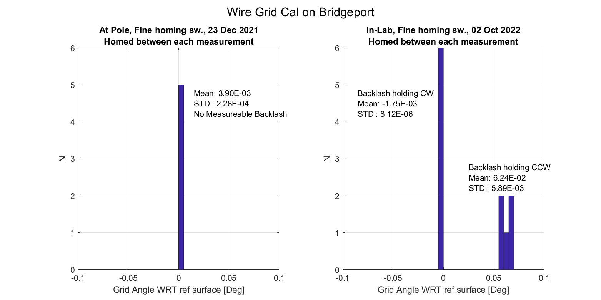
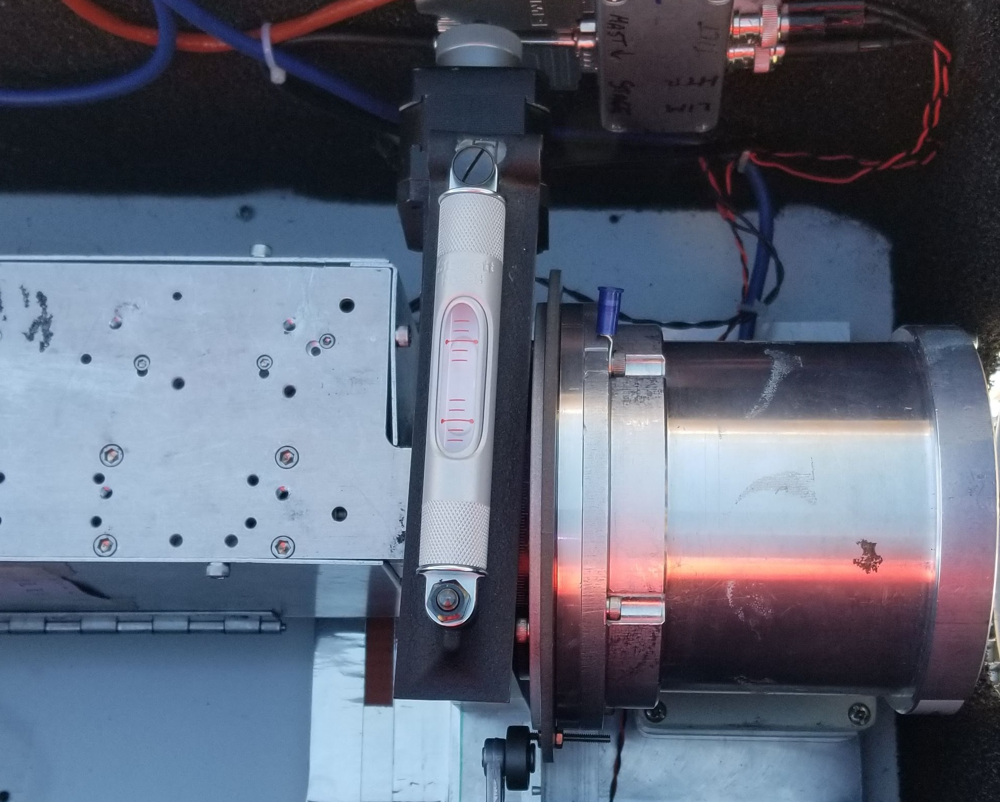
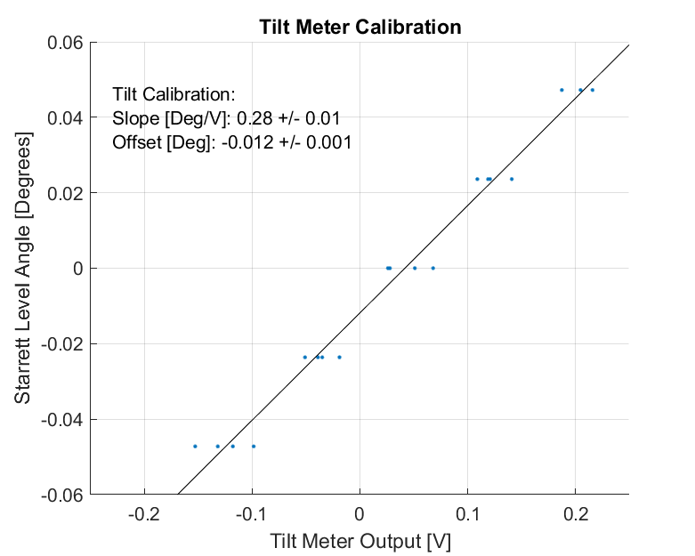

We observe a Rotating Polarized Source (RPS) to determine the polarization angle of our detectors referenced to gravity. In essence, we do so by measuring the co-polar axis of the RPS and the θ=0 axis of the focal plane both WRT gravity and then deriving polarization angles of detectors WRT the focal plane and RPS and thus gravity.
In January 2022, we observed the RPS with BICEP3 and in July 2022 we published a summary of our characterization of the RPS and estimation of BICEP3's polarization angles . However, I wanted to create some postings that covers the contents of the SPIE paper in more detail.
This posting covers the characterization of the RPS's co-polar axis WRT gravity, addresses uncertainties and identifies any necessary follow-ups.
Introduction
The RPS used for BICEP3 is constructed of a quasi-thermal noise source that transmits a broad and instantaneous band 10 GHz wide and centered at 95 GHz, called a Broad Spectrum Noise Source or BSNS (see Figure 1.1). The BSNS uses rectangular waveguide and so is linearly polarized. The output of the BSNS is polarized further by a polarizing wire grid. We reference the RPS to gravity using a high-precision tilt meter.
Typical setup of the Rotating Polarized Source for polarization calibration. A. 95GHz Broad Spectrum Noise Source. B. Thorlabs rotation stage. C. Polarizing Wire Grid. D. Tuff Tilt precision tilt meter.
Relating the co-polar axis of the wire grid to gravity occurs in two steps:
Measuring the angle of the polarizing wire grid WRT to a reference surface.
Measuring the angle of the reference surface with respect to gravity.
The first part is accomplished by using a microscope installed in a Bridgeport (AKA knee mill) to measure the mechanical orientation of the grid's wires with respect to the top flat surface of the rotation stage as the reference plane -- the arrow from B points to this surface in figure 1.1. The second part is accomplished using the RPS's tilt meter: with the RPS completely assembled, we place a precision machinist level on the reference surface of the rotation stage and record the number given by the tilt meter when the level is perfectly centered. In addition, I monitor the output of the tilt meter during the entire campaign and correct for tilt fluctuations in the analysis of RPS data.
When we're observing the RPS on-mast we calculate the angle of the wire grid WRT gravity, $\zeta_{grav}$, using our knowledge of the stage's command angle, $\zeta_{stage}$, grid-horizontal, $\zeta_{grid}$, tilt meter output, $\zeta_{tilt}$, and tilt meter calibration $\zeta_{tilt,0}$[1]:
The following sections describe how we accomplish parts I and II in detail.
Calibrating the Wire Grid Angle WRT Reference Surface
During the 2021/2022 RPS campaign, the wire grid calibration followed a similar procedure outlined in JMK's 08-Nov-2013 Entry in the Calibration HW Logbook:
Install RPS rotation stage into Bridgeport vise
Use a dial indicator to square the reference surface on the rotation stage (typically to <0.02°)
Install a centering scope in the bridgeport spindle to locate wires
Home the rotation stage
Determine the angle of the wire grid WRT to the reference surface
Command the stage to an angle such that there is zero apparent travel in the wires when driving the linear stage of the bridgeport.
Before the RPS went on the mast in late December, I zeroed the RPS grid to the homing position and measured the grid angle to be 5.4545° which was repeatable to less than half the width of one of the tungsten wires over the span of the grid (σζ,grid<0.005°).
I also confirmed a bidirectional repeatability on the command angle of the stage of σζ,stage=0.003° given from the spec sheet by commanding the stage to various angles while approaching both directions.
Rotation Stage Backlash
When we brought the RPS down from the mast in late January, I had less that 24 hours before I was supposed to leave Pole and was unable to repeat the measurement of the wires on the Bridgeport before leaving. I disassembled and packed the RPS in such a way that I could repeat the bridgeport measurements when I returned to the states.
In early March, I measured the wire grid angle on the bridgeport at Harvard in the Smithsonian's RX Lab. This time there was a small amount of backlash in the rotation stage:
Putting slight pressure on the shroud in the clockwise direction, the wire grid angle was at exactly the same value: 5.4545°.
With slight pressure in the counter-clockwise direction, the wire grid was at an angle of 5.4545+0.062°

In my next posting, I'll look at the polarization angle fits from the RPS observations to try to determine whether this backlash developed during the observing campaign or during transport on the way back from Pole was more likely.
Calibrating the Reference Surface Angle WRT Gravity
We determine the orientation of the reference surface to gravity using a high-precision tilt meter. The tilt meter and the rotation stage are fixed to the same aluminum base plate such that any rotation of the reference surface along the rotation axis of the wire grid is accurately captured in the tilt readout. We calibrate the gain and tilt-zero of the tilt meter using a machinist's bubble level before installing the RPS on the mast. We record the tilt meter output throughout the observation campaign so that was can correct for fluctuations in tilt during the analysis.
Tilt Meter Calibration
We calibrate the tilt meter using a Starrett No.98 bubble level which has a precision of ~0.001°. The bubble level is placed on the reference surface (see figure below) and the RPS is tilted by placing shims under the aluminum baseplate on one side.

Example photo of calibrating the tilt meter using a Starrett No. 98.
The tick marks on the level and the voltage reading from the tilt meter are recorded for a number of angles in either direction. The width of the bubble in the level is smaller than the width of the tick marks, so I account errors in the calibration by reading out the tilt meter with the bubble at both tick marks. In the figure below, we can see that the calibration error of of 0.01°/V and 0.001° for the gain and tilt-zero respectively which are in agreement with the specifications given by the
Tilt Meter Manual.

Machinist level angle vs. tilt meter output which establishes the conversion parameters for the tilt meter.
Real-Time Tilt Monitoring
During the RPS observations, I recorded the output of the tilt meter at a sample rate of 0.5 Hz using a Labjack in order to monitor and correct for any changes in the orientation of the RPS as detected by the tilt meter. In the figure below, I show the output of the tilt meter during RPS observations with two very different weather conditions:
RPS tilt meter monitor plots for some select days to demonstrate the effect of weather on the RPS wire grid angle. The gray boundary represents the error due to uncertainties in the tilt meter calibration.
We can seeO(0.1°) fluctuations in the tilt on Sunny days due to the uneven diurnal heating of the guy wires holding the calibration mast in place. On cloudier days, the diurnal heating isn't as prevalent but the tilt meter does settle at some non-zero value. On the first example cloudy day, "Cloudy1", it was also bit more windy and we can see that result in an increase of the short-timescale variance.
In previous years, the approach was to periodically zero out the tilt meter by manually adjusting the mast lines. Considering how numerous affects can change the tilt at relatively large levels on such short timescales, I chose to leave the mast as-is for the duration of the campaign and opted instead to correct the RPS angle using the live monitoring data I recorded.
In a follow-up posting where I look at the polarization angles in detail, I'll look at how the polarization estimates are improved when we apply a correction using the tilt meter live monitoring data.
Tilt Uncertainties
ζtilt,0 is given as 0.001° directly from the calibration above, but I calculate the error bars on ζtilt by converting the tilt output from the live monitor data in volts to degrees using combinations of the tilt slope+σslope, slope-σslope, zero+σzero, and zero-σzero and then finding the maximum and minimum resulting tilt angles between the different combinations for a given sample which are shown as the gray regions in Figure 3.2. For my final uncertainty on ζtilt, I use the maximum difference of the error bars among these four exemplary days which comes out to be σtilt=0.013°
Summary
In this posting, I have described the characterization of the RPS's co-polar axis as the referencing of the orientation of the polarizing wire grid WRT to gravity ζgrav which comprises the stage command angle, angle of the wires at a command angle of 0°, the readout of the tilt meter, and the angle of the tilt meter when the stage is at 0° and the grid is horizontal WRT gravity:
I have also characterized the uncertainty of all of these terms which I summarize in the table below:
Name
Symbol
Uncertainty [Deg]
Stage cmd angle
ζstage
0.002
Grid-Zero
ζgrid
<0.005
Tilt Conversion
ζtilt
0.013
Tilt Zero
ζtilt,0
0.001
Total
ζgrav
0.014
Table of uncertainties that contribute to the total uncertainty in the angle of the polarizing wire grid WRT gravity.
Before putting the RPS on the mast, we established a reference of the wire grid WRT gravity with combined precision of 0.014° between the Bridgeport and tiltmeter calibrations. When the RPS observations were complete I didn't have enough time before I had to leave Pole to check the calibration on the bridgeport again. Upon returning to the U.S., I found the rotation stage had developed some play in the gears resulting in 0.06° of movement in the wire grid. In a follow-up posting, I'll take a look at the polarization angle estimates from the RPS campaign to discern if the backlash developed during the observations or during shipment back home.
Appendix
Footnotes
Click on the number to return to the main text.
[1]
We used to refer to this term using θ but have changed it to ζ to avoid confusion with the polar instrument-fixed detector centers which are also defined by θ.